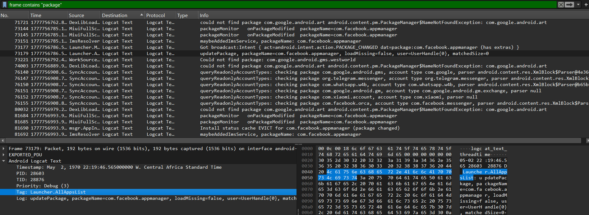
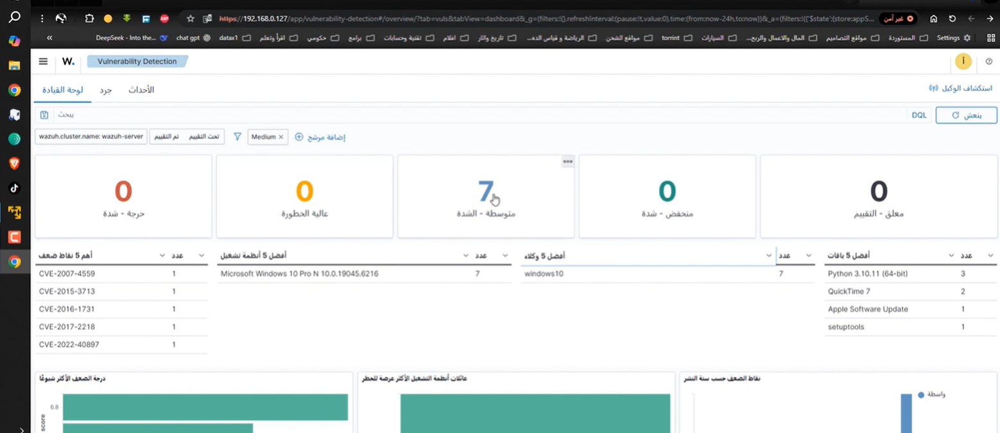
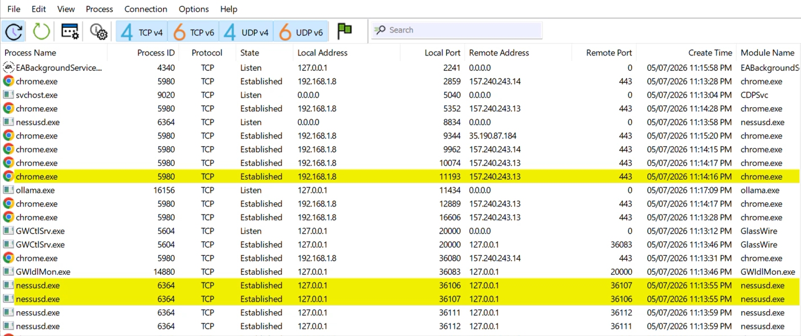

🎖️ Professional Military Experience
Former Non-Commissioned Officer (NCO)
- Demonstrated exceptional leadership and discipline.
- Expertise in operational security and strategic planning.

With 10 years of intensive experience in radar and electronic systems, I have transitioned into cybersecurity. Specializing in SOC analysis, incident response, and vulnerability assessment.
Using Wireshark & ADB for Android forensic audit.

مرجعك التقني للدروس، التحليلات الأمنية، وأحدث مستجدات عالم الأمن السيبراني.
شروحات مبسطة وعميقة لمفاهيم الشبكات، أنظمة التشغيل، تحليلات الحزم (Wireshark)، وإعدادات أمان الراوتر.
استكشف الدروس ←تابع أحدث الثغرات العالمية (CVEs)، أخبار الاختراقات، وتنبيهات الحماية للشركات والأفراد مع تحليلات تقنية.
آخر الأخبار ←تطبيقات عملية من مختبري المنزلي، إعدادات أدوات SIEM (مثل Wazuh)، وتجارب محاكاة الهجمات والدفاع.
تصفح المختبرات ←مقالات تقنية متخصصة (مثل أمان السيارات الذكية، أدوات السيرفرات، وأدلة الحماية للمؤسسات).
قراءة المقالات ←لقطات شاشة توضح لوحة قيادة اكتشاف الثغرات وتفاصيل الحزم المتأثرة في بيئة المختبر.
"This dashboard illustrates my proactive approach to vulnerability management within my home lab. By leveraging Wazuh's vulnerability detection module, I continuously monitor endpoints to identify and assess security risks.
As shown in the dashboard, I have successfully identified 7 medium-severity vulnerabilities related to outdated software components (such as Python and QuickTime versions) on my Windows 10 endpoints. My workflow involves not just detecting these issues, but prioritizing them based on their CVE scores to ensure effective remediation, which is a core skill for any SOC Analyst L1."


Capturing live traffic, tracking socket connections, and flagging large payload anomalies in real-time.

Analyse du trafic réseau en temps réel avec TCPView : Cette capture illustre une phase de surveillance active des connexions réseau au sein de mon environnement de laboratoire. En utilisant TCPView, j'analyse les processus en cours, tels que les interactions du scanner de vulnérabilités Nessus (nessusd.exe) et l'activité des navigateurs, afin de cartographier les flux de données et d'identifier les communications établies.

Google | Jan 24, 2026 | Verify Online
Conducted a technical security review and vulnerability assessment of a residential modem. Identified critical exposure to CVE-2011-3192 (Apache ByteRange DoS).

Outcome: Documented technical analysis and reporting of findings.
📞 Phone: +213 658 900 112
✉️ Email: mohamedyacineboucheteur@gmail.com